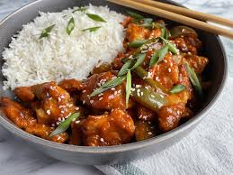
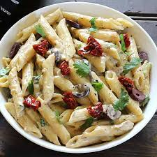

Food Recipe Card:-





1) Chicken Biryani:
Ingredients:
Chicken Marinade:
Chicken:1 kg, cut into pieces
Rice:
2 cups Basmati (aged)
Marinade:
1/2 cup yogurt, 1 tbsp ginger-garlic paste, 1 tsp turmeric, 2-3 tsp red chili powder, 1 tsp coriander powder,1 tsp garam masala, 1 tsp salt
Layering:
2 large onions (sliced and fried), 1/2 cup mint leaves, 1/2 cup coriander leaves, 3/2 green chilies
Saffron/Color:
Pinch of saffron soaked in 1/4 cup warm milk or waterWhole
Spices:
1 bay leaf, 3 cardamom pods, 1 cinnamon stick
Method:
Marinade:
In a large bowl, mix chicken with yogurt, ginger-garlic paste, spices, mint, coriander, and half of the fried onions. Marinate for at least 30 minutes to 4 hours.
Cook Rice:
Soak rice for 20 mins. In a large pot of boiling water, add whole spices and salt. Add rice and cook until 70% done (firm to the bite). Drain and set aside.
Cook Chicken:
In a heavy-bottomed pot, heat ghee/oil. Add marinated chicken and cook on medium-high heat until the chicken is mostly cooked and the oil separates (about 10-15 mins).
Assemble/Layer:
Reduce heat to low. Layer the rice over the chicken, top with remaining fried onions, coriander, and saffron milk.
Dum (Steam):
Cover the pot with a tight-fitting lid or foil. Cook on low heat for 15-20 minutes until the rice is fully cooked.
Serve:
Gently mix the layers and serve hot with raita.
2) Chicken Broast:
Ingredients:
Chicken:
1 kg (leg, breast, or wing pieces, ideally with skin)
First Marinade:
4-5 tbsp vinegar, 1 tsp salt, and 1 glass of water
Second Marinade:
1 tbsp ginger-garlic paste, 1 tsp red chili powder, 1 tsp paprika, 1 tsp black pepper, 1 tsp mustard powder, and 1 tbsp soy sauce
Dry Coating:
1 cup all-purpose flour, 1/2 cup cornstarch, 1/2 tsp baking powder, and a pinch of salt/pepper
Wet Dip:
1 egg beaten with 2-3 tbsp chilled milk
Method
Brine:
Make deep cuts in the chicken pieces. Soak them in the water-vinegar-salt solution for at least 1 hour (or overnight for best results) to make the meat tender. Drain well.
Season:
Apply the second marinade (ginger-garlic, chili, soy sauce, spices) to the drained chicken. Let it rest for another hour.Coating:Dredge a chicken piece in the dry flour-cornstarch mixture, pressing firmly.Dip it quickly into the egg-milk mixture.Coat it again in the dry flour mixture for a thick, "craggy" texture.
Rest:
Let the coated chicken sit for 5-10 minutes. This helps the flour settle so the coating doesn't fall off during frying.
Fry:
Heat oil to medium-high . Fry pieces in batches for 12-15 minutes, turning occasionally until golden brown and cooked through.
Serve:
Drain on a wire rack (not paper towels) to maintain crispiness. Serve hot with fries and garlic sauce.
3)Dumplings:
Ingredients:
For the Filling (Yields ~30-35 dumplings):
Beef:
1 lb ground beef (80/20 lean-to-fat ratio is best for juiciness).
Aromatics:
1 cup yellow or white onion (finely minced) and 3-4 green onions (chopped).
Liquid:
1/4 cup beef stock, chicken stock, or water.
Seasoning:
2 tbsp soy sauce, 1 tbsp sesame oil, 1 tbsp ginger (minced), 1 tsp salt, and 1/2 tsp black or white pepper.
Optional Kick:
1/2 tsp Chinese five-spice powder or cumin seeds for extra depth.
For the Wrappers:
1 package store-bought dumpling wrappers
OR
2 cups all-purpose flour mixed with 2/3 cup warm water and a pinch of salt.
Method
Marinate the Beef:
In a large bowl, combine the ground beef with the stock, soy sauce, sesame oil, ginger, salt, and pepper.
The Secret Step (The Emulsion):
Using a pair of chopsticks or a fork, stir the mixture vigorously in one direction for 2–3 minutes until it becomes sticky and the liquid is fully absorbed. This ensures the dumplings stay juicy when cooked.
Add Onions:
Fold in the minced yellow onion and green onions until just combined.
Assemble:
Place 1 generous teaspoon of filling in the center of a wrapper. Moisten the edges with water, fold, and pinch firmly to seal.
Cook:
Boil: Drop into boiling water. When they float, add a splash of cold water. Repeat this twice; they are done when they float a second time (~6-8 minutes total)
OR
Pan-fry (Potstickers): Heat 1 tbsp oil in a skillet. Fry the bottoms until golden (2 mins). Add 1/4 cup water, cover immediately, and steam for 5–6 minutes until the water evaporates.
4)Golgappe:
Part 1: Crispy Puri (Shells):
ingredients:
1 cup fine semolina (sooji), 2 tbsp all-purpose flour (maida), a pinch of baking soda, and 1/4 cup warm water.
Dough:
Mix the dry ingredients and add water gradually to form a stiff dough. Knead for 5–10 minutes until smooth, then let it rest under a damp cloth for 20–30 minutes.
Rolling:
Roll the dough into a very thin sheet (about 1mm). Use a small round cutter (approx. 2 inches) to cut out circles.
Frying:
Heat oil until moderately hot. Drop the circles in; they should puff up immediately. Press them lightly with a slotted spoon to help them swell. Fry on low-medium heat until golden and crispy.
Part 2: Spicy & Tangy Pani (Water):
Spicy Mix:
Blend 1 cup fresh coriander, 1/2 cup mint, 2–3 green chilies, and a small piece of ginger into a smooth paste.
Assembly:
Mix the paste with 1 liter of chilled water. Add 2 tbsp tamarind pulp, 1 tsp black salt, 1 tsp roasted cumin powder, 1 tsp chaat masala, and a squeeze of lemon.
Variations:
For a Khatta Meetha (sweet and sour) version, add 2–3 tbsp of jaggery or sugar to the mix. Top with crispy boondi just before serving.
Part 3: The Filling:
Ingredients:
2–3 boiled potatoes (diced or mashed), 1/2 cup boiled black chickpeas (kala chana) or white chickpeas, 1 tsp chaat masala, and a pinch of red chili powder.
Method:
Combine the ingredients in a bowl. You can also add finely chopped onions and fresh coriander for extra crunch.
Serve:
Gently poke a hole in the center of the crispy puri. Stuff it with a teaspoon of the potato-chickpea mixture, dip it into the chilled spicy water, and eat it in one go for the full street-food experience.
5)Chicken Manchurian:
Ingredients:
Chicken:
500g boneless cubes
Marinade:
1 egg, 2 tbsp cornflour, 2 tbsp all-purpose flour, 1 tsp ginger-garlic paste, 1 tsp soy sauce, salt/pepper
Sauce:
1/2 cup tomato ketchup, 1/4 cup chili garlic sauce, 1 tbsp soy sauce, 1 tbsp vinegar, 1 tbsp sugar, 1 cup chicken stock or water
Veggies:
1 onion (cubed), 1 capsicum (cubed), 1 tbsp chopped garlic, spring onions for garnish
Method:
Fry Chicken:
Mix chicken with marinade ingredients. Deep-fry until golden and crispy. Set aside.
Sauté:
Heat 2 tbsp oil. Sauté garlic until fragrant, then add onion and capsicum.Stir-fry for 1 minute.
Simmer:
Add the sauce ingredients (ketchup, chili garlic sauce, soy sauce, vinegar, sugar, and stock). Bring to a simmer.
Thicken:
Mix 1 tbsp cornflour with 3 tbsp water to make a slurry. Stir into the sauce until it thickens.
Finish:
Toss in the fried chicken and garnish with spring onions.
Simple Vegetable Rice:
Ingredients:
Rice:
2-3 cups boiled basmati rice (preferably cold/leftover)Veggies: 1/2 cup finely chopped carrots, 1/2 cup cabbage, 1/4 cup capsicum
Seasoning:
2 tbsp soy sauce, 1 tsp black pepper, 1 tsp salt, 1 tsp chicken powder (optional)
Aromatics:
1 tbsp chopped garlic, 2 tbsp oil, 1-2 eggs (optional)
Method:
Scramble:
Heat oil in a wok. If using eggs, scramble them first and set aside.
Stir-Fry:
In the same wok, sauté garlic. Add carrots, cabbage, and capsicum. Stir-fry on high heat for 2 minutes to keep them crunchy.
Toss:
Add the boiled rice, scrambled egg, soy sauce, salt, and pepper.
Finish:
Mix well on high heat for 2 minutes until everything is well combined. Garnish with the green parts of spring onions.
6)Pasta:
Ingredients:
Pasta:
2 cups (Penne, Fusilli, or Fettuccine)
Butter:
2 tbsp
Flour:
2 tbsp (All-purpose/Maida)
Milk:
2 cups (Full fat, at room temperature)
Cheese:
1/4 cup (Mozzarella, Parmesan, or Cheddar)
Aromatics:
1 tbsp finely chopped garlic
Seasoning:
1 tsp oregano, 1 tsp chili flakes, 1/2 tsp black pepper, and salt to taste
Optional:
1/2 cup sautéed mushrooms, bell peppers, or sweet corn
Method:
Boil Pasta:
Cook pasta in salted boiling water according to package instructions until al dente (firm to the bite). Drain and set aside, reserving a 1/2 cup of pasta water.
Sauté Garlic:
In a pan, melt the butter over medium heat. Add the chopped garlic and sauté for 30 seconds until fragrant (don't let it brown).
Make the Roux:
Add the flour to the butter. Whisk constantly for 1–2 minutes until the raw smell disappears and it turns slightly golden.
Add Milk:
Gradually pour in the milk while whisking vigorously to avoid lumps. Continue cooking on low-medium heat until the sauce thickens and coats the back of a spoon.
Season & Cheese:
Stir in the salt, pepper, oregano, and chili flakes. Add the cheese and stir until melted and smooth.
Toss:
Add the boiled pasta (and any sautéed veggies) to the sauce. If the sauce is too thick, splash in some of the reserved pasta water.
Serve:
Garnish with extra herbs or cheese and serve immediately while hot.
Pro-Tips:
Whisking is Key: To keep the sauce smooth, add the milk very slowly at first, whisking into a paste before adding the rest.
Don't Overcook:
Pasta continues to cook in the hot sauce, so draining it a minute early keeps it from getting mushy.
7)Pizza:
Ingredients:
For the Dough:
Flour:
2 ½ cups all-purpose or bread flour
Yeast:
1 packet (2 ¼ tsp) active dry or instant yeast
Water:
1 cup warm water (approx. 45°C/110°F)
Oil:
2 tbsp olive oil
Seasoning:
1 tsp salt and 1 tFor the Toppings:
Sauce:
½ cup pizza sauce or marinara
Cheese:
2 cups shredded mozzarella
Protein/Veggies:
Pepperoni, cooked chicken, bell peppers, or onions
Method:
Prepare Dough:
Activate yeast in warm water and sugar for 5–10 minutes. Mix in flour, salt, and oil, then knead for 5–10 minutes until smooth.
Rise:
Let the dough rise in a greased, covered bowl for about 1 hour or until double
8)Zinger Burger:
Ingredients:
Chicken:
2 large chicken breasts (cut into 4 flat fillets)
Marinade:
1 tbsp ginger-garlic paste, 1 tsp red chili powder, 1 tsp mustard powder, 1 tbsp soy sauce, 1 tsp salt, and ½ tsp black pepper.
Dry Coating:
2 cups all-purpose flour, ½ cup cornstarch, 1 tbsp paprika, 1 tsp baking powder, and a pinch of salt.
Wet Dip:
1 egg beaten with ½ cup chilled water or milk.
Assembly:
4 sesame buns, mayonnaise, iceberg lettuce, and cheese slices.
Method:
Marinate:
Flatten chicken fillets slightly with a mallet. Mix with the marinade ingredients and let rest for at least 1 hour (or overnight).
The Double Coating(Secret to the Crunch):
1.Dredge a marinated fillet in the Dry Coating, pressing down firmly to ensure it's fully covered.
2.Dip it briefly into the Wet Dip.
3.Place it back into the Dry Coating. Use your fingers to "scrunch" the flour onto the chicken—this creates the signature crispy flakes (crags).
Fry:
Heat oil to medium. Fry each fillet for 6–8 minutes until golden brown and extremely crunchy.
Assemble:
Toast the buns lightly. Spread a generous amount of mayo on the bottom bun, add a layer of shredded lettuce, the hot chicken fillet, a cheese slice, and the top bun.
Created By:NIMRA ABID